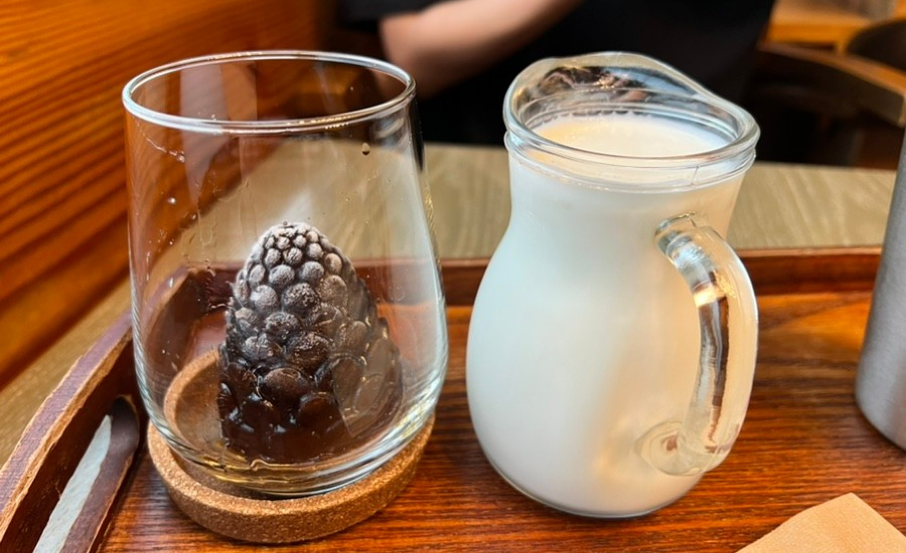

ソウルの隠れた韓屋村の名所、恩平韓屋村の中にあるデザート店で、独特のメニューが目を引く。ホットククロッフル、栗アイスクリーム、松ぼっくりキューブラテが最も人気のある代表メニューだ。甘栗アイスクリームは材料の特性上、季節限定メニューである。 手作りの栗ソースが入って香ばしくて甘い味が味わえる。 松ぼっくりキューブラテは、松ぼっくり状のコーヒーキューブに牛乳を注いで飲む独特な形のラテで、観光客が多くの写真を撮っていくメニューであり、味も素晴らしい。恩平韓屋村特有の静かな伝統的な雰囲気を感じながら、北漢山の美しい全景を一緒に鑑賞できるとても良い場所だ。
美しい韓服を着て、この店のユニークなシグネチャーメニューである松ぼっくりキューブラテとホットククロフルを食べるユニークな経験をしてみよう。 韓国の代表的なストリートフードであるホットクと洋食であるクロッフルの調和、韓国でよく見られる松ぼっくりの形を利用したラテはとても魅力的だ。
住所 : ソウル特別市恩平区津寛キル10
最寄りの地下鉄駅 : クパバル駅からバスで約15分
ホームページ : https://www.instagram.com/cafe_volgasim/
近くの観光地
- 恩平歴史韓屋博物館
- 住所 : ソウル恩平区蓮西路50ギル8
- ホームページ : https://museum.ep.go.kr
- 三人で文学館
- 住所 : ソウル恩平区ジングァンキル23三人で文学館
- ホームページ : http: www.bongeunsa.org